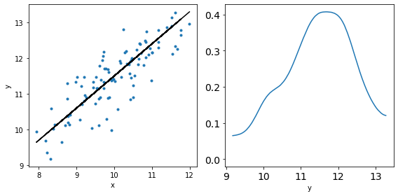

Bayesian Linear Regression
Bayesian Linear Regression#
import numpy as np
import matplotlib.pyplot as plt
import arviz as az
N = 100
x = np.random.normal(10,1,N)
print(x)
eps = np.random.normal(0,0.5,size=N)
alpha_real = 2.5
beta_real = 0.9
y_real = alpha_real + beta_real*x
y = y_real + eps
[11.99357583 11.61184528 9.25244795 9.21866766 8.77518144 10.42584497
9.8759565 10.6627488 10.15001176 9.63944198 8.21069534 8.17547873
8.74981871 9.62865872 10.44055208 9.5328262 10.83777448 9.19109929
11.66281154 11.39085264 8.59930908 9.94269469 9.12115634 9.82754917
10.27281718 8.76134097 8.97390649 10.67717763 10.59622388 8.38912723
9.70155797 10.53842597 10.94786201 10.70640381 9.59940793 9.67666301
9.79187034 8.70320556 9.83844113 10.44187972 9.77330119 10.33087132
9.97237764 11.17182019 11.16848835 10.4250025 9.43317918 10.6247537
9.71113793 10.45707944 9.19727784 10.39646551 11.0045539 10.09111094
10.64816145 10.01903106 9.01189912 11.54791263 10.85396029 11.76265359
10.50318933 8.42645351 10.8280754 9.39652818 10.99109925 10.17480863
9.506303 7.93372939 8.33382455 9.92557465 10.18654932 8.76639667
9.7403363 9.59643058 10.50131637 11.52890359 10.90549785 8.83660681
10.77522387 9.91961634 10.81126017 10.23633056 9.71884824 9.14432626
11.5213461 8.30462163 11.6064404 9.84879599 9.54666384 9.71545374
11.01090737 10.40445551 11.17106685 10.31456821 9.0796758 11.76793814
9.59483231 9.44501985 8.80357123 9.4928924 ]
_, ax = plt.subplots(1,2,figsize=(8,4))
ax[0].plot(x,y,'C0.')
ax[0].set_xlabel('x')
ax[0].set_ylabel('y')
ax[0].plot(x,y_real,'k')
az.plot_kde(y,ax=ax[1])
ax[1].set_xlabel('y')
plt.tight_layout()

!pip install pymc3
Looking in indexes: https://pypi.org/simple, https://us-python.pkg.dev/colab-wheels/public/simple/
Requirement already satisfied: pymc3 in /usr/local/lib/python3.7/dist-packages (3.11.5)
Requirement already satisfied: arviz>=0.11.0 in /usr/local/lib/python3.7/dist-packages (from pymc3) (0.12.1)
Requirement already satisfied: numpy<1.22.2,>=1.15.0 in /usr/local/lib/python3.7/dist-packages (from pymc3) (1.21.6)
Requirement already satisfied: deprecat in /usr/local/lib/python3.7/dist-packages (from pymc3) (2.1.1)
Requirement already satisfied: pandas>=0.24.0 in /usr/local/lib/python3.7/dist-packages (from pymc3) (1.3.5)
Requirement already satisfied: dill in /usr/local/lib/python3.7/dist-packages (from pymc3) (0.3.5.1)
Requirement already satisfied: scipy<1.8.0,>=1.7.3 in /usr/local/lib/python3.7/dist-packages (from pymc3) (1.7.3)
Requirement already satisfied: semver>=2.13.0 in /usr/local/lib/python3.7/dist-packages (from pymc3) (2.13.0)
Requirement already satisfied: theano-pymc==1.1.2 in /usr/local/lib/python3.7/dist-packages (from pymc3) (1.1.2)
Requirement already satisfied: fastprogress>=0.2.0 in /usr/local/lib/python3.7/dist-packages (from pymc3) (1.0.3)
Requirement already satisfied: cachetools>=4.2.1 in /usr/local/lib/python3.7/dist-packages (from pymc3) (4.2.4)
Requirement already satisfied: patsy>=0.5.1 in /usr/local/lib/python3.7/dist-packages (from pymc3) (0.5.2)
Requirement already satisfied: typing-extensions>=3.7.4 in /usr/local/lib/python3.7/dist-packages (from pymc3) (4.1.1)
Requirement already satisfied: filelock in /usr/local/lib/python3.7/dist-packages (from theano-pymc==1.1.2->pymc3) (3.8.0)
Requirement already satisfied: xarray-einstats>=0.2 in /usr/local/lib/python3.7/dist-packages (from arviz>=0.11.0->pymc3) (0.2.2)
Requirement already satisfied: setuptools>=38.4 in /usr/local/lib/python3.7/dist-packages (from arviz>=0.11.0->pymc3) (57.4.0)
Requirement already satisfied: matplotlib>=3.0 in /usr/local/lib/python3.7/dist-packages (from arviz>=0.11.0->pymc3) (3.2.2)
Requirement already satisfied: xarray>=0.16.1 in /usr/local/lib/python3.7/dist-packages (from arviz>=0.11.0->pymc3) (0.20.2)
Requirement already satisfied: packaging in /usr/local/lib/python3.7/dist-packages (from arviz>=0.11.0->pymc3) (21.3)
Requirement already satisfied: netcdf4 in /usr/local/lib/python3.7/dist-packages (from arviz>=0.11.0->pymc3) (1.6.0)
Requirement already satisfied: pyparsing!=2.0.4,!=2.1.2,!=2.1.6,>=2.0.1 in /usr/local/lib/python3.7/dist-packages (from matplotlib>=3.0->arviz>=0.11.0->pymc3) (3.0.9)
Requirement already satisfied: kiwisolver>=1.0.1 in /usr/local/lib/python3.7/dist-packages (from matplotlib>=3.0->arviz>=0.11.0->pymc3) (1.4.4)
Requirement already satisfied: cycler>=0.10 in /usr/local/lib/python3.7/dist-packages (from matplotlib>=3.0->arviz>=0.11.0->pymc3) (0.11.0)
Requirement already satisfied: python-dateutil>=2.1 in /usr/local/lib/python3.7/dist-packages (from matplotlib>=3.0->arviz>=0.11.0->pymc3) (2.8.2)
Requirement already satisfied: pytz>=2017.3 in /usr/local/lib/python3.7/dist-packages (from pandas>=0.24.0->pymc3) (2022.2.1)
Requirement already satisfied: six in /usr/local/lib/python3.7/dist-packages (from patsy>=0.5.1->pymc3) (1.15.0)
Requirement already satisfied: importlib-metadata in /usr/local/lib/python3.7/dist-packages (from xarray>=0.16.1->arviz>=0.11.0->pymc3) (4.12.0)
Requirement already satisfied: wrapt<2,>=1.10 in /usr/local/lib/python3.7/dist-packages (from deprecat->pymc3) (1.14.1)
Requirement already satisfied: zipp>=0.5 in /usr/local/lib/python3.7/dist-packages (from importlib-metadata->xarray>=0.16.1->arviz>=0.11.0->pymc3) (3.8.1)
Requirement already satisfied: cftime in /usr/local/lib/python3.7/dist-packages (from netcdf4->arviz>=0.11.0->pymc3) (1.6.1)
import pymc3 as pm
with pm.Model() as model_g:
α = pm.Normal('α', mu=0, sd=10)
β = pm.Normal('β', mu=0, sd=1)
ϵ = pm.HalfCauchy('ϵ', 5)
μ = pm.Deterministic('μ', α + β * x)
y_pred = pm.Normal('y_pred', mu=α + β * x, sd=ϵ, observed=y)
trace_g = pm.sample(2000, tune=800,return_inferencedata=True)
100.00% [2800/2800 00:10<00:00 Sampling chain 0, 0 divergences]
100.00% [2800/2800 00:10<00:00 Sampling chain 1, 0 divergences]
az.plot_trace(trace_g, var_names=['α', 'β', 'ϵ'])
array([[<matplotlib.axes._subplots.AxesSubplot object at 0x7ff7903296d0>,
<matplotlib.axes._subplots.AxesSubplot object at 0x7ff7a4210410>],
[<matplotlib.axes._subplots.AxesSubplot object at 0x7ff7935a01d0>,
<matplotlib.axes._subplots.AxesSubplot object at 0x7ff792fa1150>],
[<matplotlib.axes._subplots.AxesSubplot object at 0x7ff7900d2dd0>,
<matplotlib.axes._subplots.AxesSubplot object at 0x7ff78ff642d0>]],
dtype=object)
az.summary(trace_g)
| mean | sd | hdi_3% | hdi_97% | mcse_mean | mcse_sd | ess_bulk | ess_tail | r_hat | |
|---|---|---|---|---|---|---|---|---|---|
| α | 3.443 | 0.536 | 2.381 | 4.384 | 0.016 | 0.011 | 1171.0 | 1237.0 | 1.0 |
| β | 0.800 | 0.053 | 0.705 | 0.905 | 0.002 | 0.001 | 1164.0 | 1253.0 | 1.0 |
| ϵ | 0.499 | 0.038 | 0.431 | 0.569 | 0.001 | 0.001 | 1703.0 | 1488.0 | 1.0 |
| μ[0] | 13.044 | 0.117 | 12.823 | 13.261 | 0.003 | 0.002 | 1384.0 | 1389.0 | 1.0 |
| μ[1] | 12.738 | 0.099 | 12.541 | 12.910 | 0.003 | 0.002 | 1481.0 | 1405.0 | 1.0 |
| ... | ... | ... | ... | ... | ... | ... | ... | ... | ... |
| μ[95] | 12.863 | 0.106 | 12.652 | 13.047 | 0.003 | 0.002 | 1434.0 | 1382.0 | 1.0 |
| μ[96] | 11.124 | 0.054 | 11.023 | 11.226 | 0.001 | 0.001 | 2450.0 | 2844.0 | 1.0 |
| μ[97] | 11.004 | 0.058 | 10.893 | 11.110 | 0.001 | 0.001 | 2121.0 | 2826.0 | 1.0 |
| μ[98] | 10.490 | 0.081 | 10.344 | 10.649 | 0.002 | 0.001 | 1496.0 | 1973.0 | 1.0 |
| μ[99] | 11.042 | 0.057 | 10.937 | 11.150 | 0.001 | 0.001 | 2214.0 | 2858.0 | 1.0 |
103 rows × 9 columns
az.plot_pair(trace_g,var_names=['α','β'], scatter_kwargs={'alpha': 0.01})
<matplotlib.axes._subplots.AxesSubplot at 0x7ff78fa8f610>
#plt.plot(x, y, 'C0.')
res = az.summary(trace_g)
alpha_m = res.loc['α']['mean']
beta_m = res.loc['β']['mean']
#print(res)
trace_a = trace_g['posterior']['α'][0].values
trace_b = trace_g['posterior']['β'][0].values
draws = range(0, len(trace_g['posterior']['α'][0]), 10)
plt.plot(x, trace_a[draws] + trace_b[draws]
* x[:, np.newaxis], c='gray', alpha=0.5);
plt.plot(x, alpha_m + beta_m * x, c='k',
label=f'y = {alpha_m:.2f} + {beta_m:.2f} * x');
plt.xlabel('x')
plt.ylabel('y', rotation=0)
plt.legend();
plt.plot(x, alpha_m + beta_m * x, c='k',
label=f'y = {alpha_m:.2f} + {beta_m:.2f} * x')
sig = az.plot_hdi(x, trace_g.posterior['μ'], hdi_prob=0.98, color='k')
plt.xlabel('x')
plt.ylabel('y', rotation=0)
plt.legend()
<matplotlib.legend.Legend at 0x7ff78f7ad950>
ppc = pm.sample_posterior_predictive(trace_g, samples=2000, model=model_g)
/usr/local/lib/python3.7/dist-packages/pymc3/sampling.py:1709: UserWarning: samples parameter is smaller than nchains times ndraws, some draws and/or chains may not be represented in the returned posterior predictive sample
"samples parameter is smaller than nchains times ndraws, some draws "
100.00% [2000/2000 00:04<00:00]
plt.plot(x, y, 'b.')
plt.plot(x, alpha_m + beta_m * x, c='k',
label=f'y = {alpha_m:.2f} + {beta_m:.2f} * x')
az.plot_hdi(x, ppc['y_pred'], hdi_prob=0.5, color='gray')
az.plot_hdi(x, ppc['y_pred'], hdi_prob=0.98, color='gray')
plt.xlabel('x')
plt.ylabel('y', rotation=0)
/usr/local/lib/python3.7/dist-packages/arviz/plots/hdiplot.py:157: FutureWarning: hdi currently interprets 2d data as (draw, shape) but this will change in a future release to (chain, draw) for coherence with other functions
hdi_data = hdi(y, hdi_prob=hdi_prob, circular=circular, multimodal=False, **hdi_kwargs)
/usr/local/lib/python3.7/dist-packages/arviz/plots/hdiplot.py:157: FutureWarning: hdi currently interprets 2d data as (draw, shape) but this will change in a future release to (chain, draw) for coherence with other functions
hdi_data = hdi(y, hdi_prob=hdi_prob, circular=circular, multimodal=False, **hdi_kwargs)
Text(0, 0.5, 'y')
ϵ